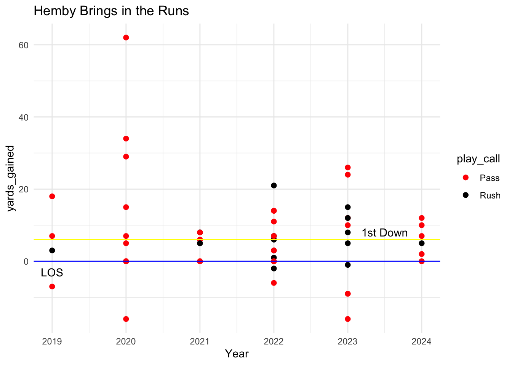
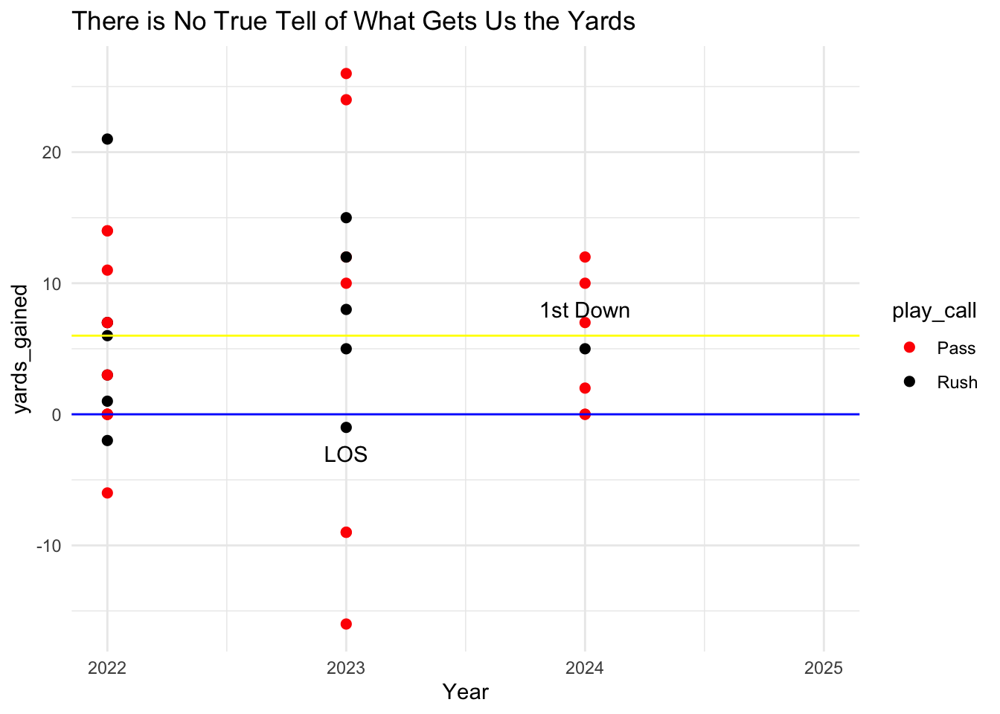

Maryland’s 2023 Loss to Illinois was a Fluke? Locksley’s Late Playcall Wasn’t as Bad as We Think
football
Maryland
Author
Sam Benning
Published
October 16, 2024
Many Terp fans remember last football season when Coach Mike Locksley dialed up an infamous 0 yard rush play on 3rd and 6 inside the Illinois 30-yard line that led to a field goal to tie the game. This was followed by an Illinois game-winning field goal as time expired, and Maryland lost 27-24 at home to last year’s Big Ten West bottomfeeder. Professor Willis, who leads our JOUR479X class, described the “collective groan” that came from the home crowd as they watched the game slip away from them in a notoriously dull fashion. We were all understandably displeased with the play call, and its outcome. But there had to be some thought that came from this decision for Coach Locks, right? After doing some data analysis, it seems like he had the right idea in mind.
In order to do so, we must first load in the proper libraries to analyze college football data game logs from the past 6 years (ie. the Locksley era at Maryland).
Code
library(tidyverse)
── Attaching core tidyverse packages ──────────────────────── tidyverse 2.0.0 ──
✔ dplyr 1.1.4 ✔ readr 2.1.5
✔ forcats 1.0.0 ✔ stringr 1.5.1
✔ ggplot2 3.5.1 ✔ tibble 3.2.1
✔ lubridate 1.9.3 ✔ tidyr 1.3.1
✔ purrr 1.0.2
── Conflicts ────────────────────────────────────────── tidyverse_conflicts() ──
✖ dplyr::filter() masks stats::filter()
✖ dplyr::lag() masks stats::lag()
ℹ Use the conflicted package (<http://conflicted.r-lib.org/>) to force all conflicts to become errors
In order to see how good/bad his decision was, we can analyze what everybody else in the NCAA has done in the exact same scenario. We can create a variable that includes only 3rd and 6 plays.
There have been 15,661 times that this exact scenario has occured since 2019. We can look further into that and learn about what has happened on these plays, by using the group_by and summarize functions.
21.64% of play calls on 3rd and 6 have been runs over the past 6 seasons. So most of the NCAA thinks that we should not have ran the ball. Now, to back this up, let’s see how successful these teams have been in this situation.
Whether run or pass, we want to see the average yards gained on all of these
Teams almost get there, averaging about 5 yards per play on 3rd and 6. Usually any team would be satisfied with a 5 yard gain, but not in this scenario. I mean, I’m sure many defenses are pretty much just protecting that first down line.
I’m going to try and help Coach Locks out here - we are going to check the average number of yards for each run play, too. Maybe it will show us that teams who run the ball on 3rd and 6 usually get there…
To do so, I found a variable in the dataset called “rush” which is a binary variable, labeled ‘1’ if a team ran the ball on a given play, and ‘0’ if they didn’t. We can use this variable to help us out.
Honestly, I’m surprised. I guess defenses were surprised as well. Of the 1 in every 5 or so times a run is called, it is expected to be successful in getting a first down (by this measure). We’re still not quite at a conclusion yet, though. We want to gather some more information first.
First, who is leading the pack in run calls on third and six?
# A tibble: 280 × 2
pos_team runcalls
<chr> <int>
1 Navy 60
2 Army 51
3 Air Force 42
4 Georgia Southern 35
5 New Mexico 32
6 Ole Miss 31
7 Kent State 30
8 Baylor 29
9 Georgia Tech 29
10 Louisiana 29
# ℹ 270 more rows
Navy tops off the list, of course, with 60 runs on 3rd and 6. Besides the other teams that we’d expect (Army and Air Force), Georgia Southern comes in at 35 runs on 3rd and 6 over the past 6 seasons. While there are some decent teams at the top of this list, I can’t say that there are any championship-level offenses that operate by running the ball a lot on 3rd and 6. Coach Locksley may not be alone with that confident play call, however he is surrounded by mediocrity.
We can now get more specific and see what Maryland has done year-by-year since Mike Locksley was hired in 2019 in this scenario. It will be pretty much the same programming, but now we just have to filter so that we are only looking at Maryland. Additionally, let’s check out how many yards we gained per season on third and six.
Wow, we had a decent three-year stretch from 2021-2023 where our men seemed to be holding their own on these plays. Coach Locksley might have a point with what he was doing. Let’s zoom back out to include the scenario that we are passing, though. It is more useful for us to see if we should’ve passed based on how well we’ve done when not calling runs.
We can first look at every third and six play for Maryland and sort it by play_type so we can see the different distributions.
To do more analysis, we need to just use “regular” plays - ie. we don’t need to include field goals, timeouts, etc.). With the above summary, we have figured out every play type so we know what to select/filter by (done below):
Now we can see every individual log for when the Terps had this situation - I included some notable key factors that may play a part in our decision to support or hate Coach Locksley.
Remember, 1 is rush, 0 is not. Of the 60 times that Maryland has had a third and six situation in the Locksley era, they have passed it quite a bit more. But how often have we converted? Let’s map each gain on a scatterplot so we can visualize if passes or runs have been getting us more yardage over time.
In our case, since we selected only runs and passes, we can use the mutate() function to add a new variable (which I named play_call) which is a categorical variable that doesn’t just list a play as a 0 or a 1, or a pass completion/sack/etc, but instead just a run or a pass.
Now we can make our desired plot, with a number of different formatting techniques to make this readable for us. I tried to make a bit of a field for us, so that we can visualize a team getting.a first down.
Code
ggplot(third_and_six_md_gains, aes(x = year, y = yards_gained, color = play_call)) +geom_point(size =2) +scale_x_continuous(limits =c(2019,2024)) +geom_hline(yintercept =6, color ="yellow") +geom_hline(yintercept =0, color ="blue") +annotate("text", x=2023.5, y=8, label="1st Down") +annotate("text", x=2019, y=-3, label="LOS") +labs(title ="Hemby Brings in the Runs",x ="Year") +scale_color_manual(values =c("Rush"="black", "Pass"="red")) +theme_minimal()

In the past, Coach Locksley was extremely pass-heavy, but in 2022 when we began to use RB Roman Hemby, there seemed to be a shift in the playcalling. Either way, there doesn’t seem to be much matter whether we run or pass the ball as to if we get the yards we need.
Let’s zoom in to look at data from last three years (the Hemby era). All we have to do is filter the years 2023 and 2024, and do the same thing again. We will use this to make our final conclusion to see if Coach Locksley could’ve passed the ball to win us the game.
Code
third_and_six_md_gains_recent <- third_and_six_md_gains |>filter(year %in%c(2022,2023,2024)) |>mutate(play_call =ifelse(rush ==1, "Rush", "Pass"))# Create the plotggplot(third_and_six_md_gains_recent, aes(x = year, y = yards_gained, color = play_call)) +geom_point(size =2) +scale_x_continuous(limits =c(2022,2025)) +geom_hline(yintercept =6, color ="yellow") +geom_hline(yintercept =0, color ="blue") +annotate("text", x=2024, y=8, label="1st Down") +annotate("text", x=2023, y=-3, label="LOS") +labs(title ="There is No True Tell of What Gets Us the Yards",x ="Year") +scale_color_manual(values =c("Rush"="black", "Pass"="red")) +theme_minimal()

From this chart, there seems to be a pretty equal chance that we’d get the first whether we ran or passed the ball. But, contrary to initial fan belief that we should not have run that ball last October, it was just as good a call as any other play in the book…the runs get us there about half the time, as do pass plays. Additionally, many big pass plays there were, there were just as many losses or insufficient gains. So, Coach Locksley is off the hook, and he may have even had a good case that we should’ve ran the ball in that scenario. Maybe the solution would be to figure it out on the first two plays so that we aren’t in this scenario too often… I mean, it looks like this may happen at least once a game to the Terps, and I’d rather not flip a coin to estimate if we were going to get a first down or not…Especially if the game is on the line. At least third and six puts us far enough away from a potential first down so that we don’t have to watch a Billy Edwards tush push.